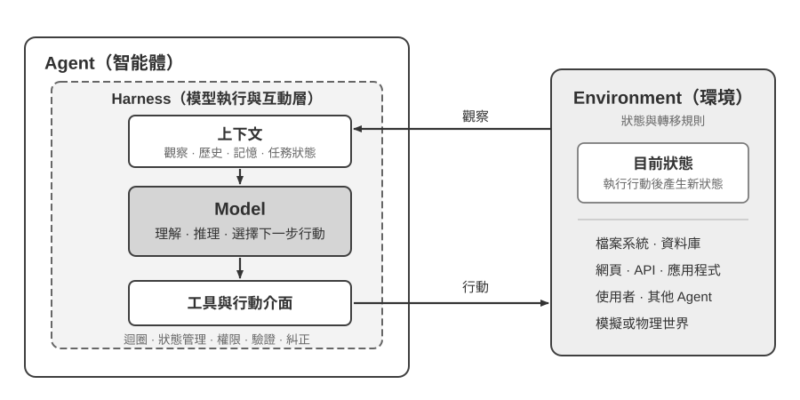
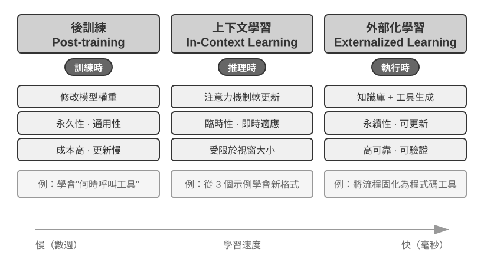
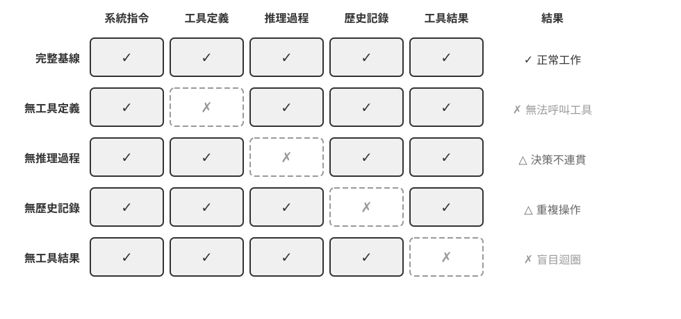
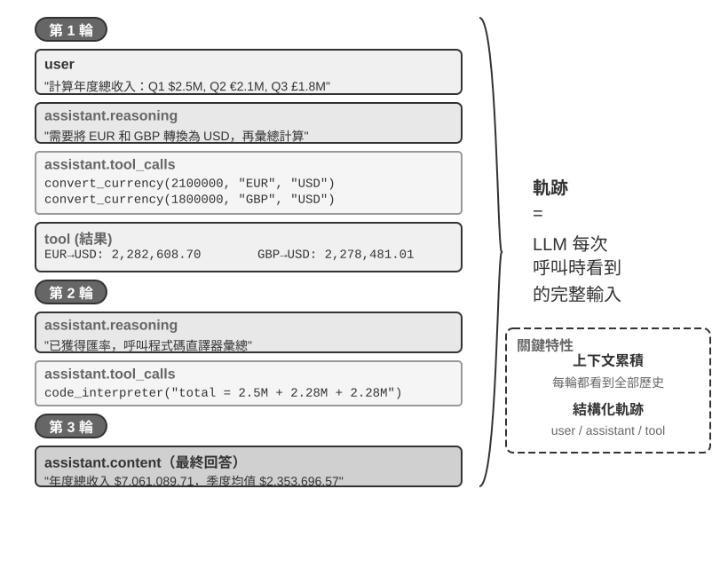
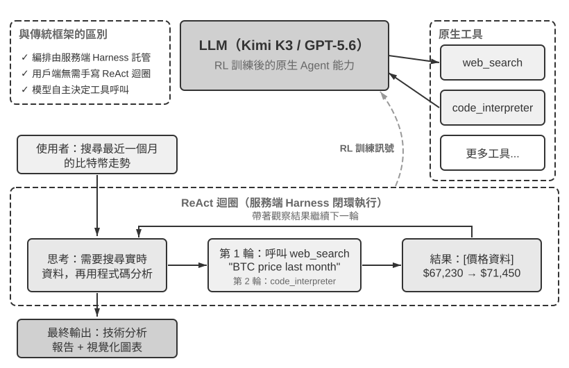
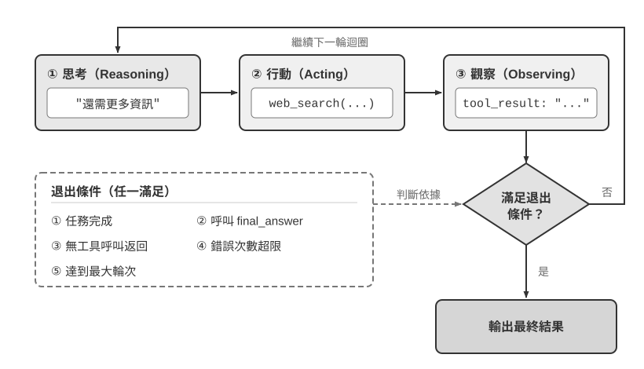

AI Agent 入門
如果你用 Cursor 寫過程式碼，看它搜尋程式碼庫、編輯多個檔案、執行測試直到透過；用 Deep Research 調研過一個課題，看它反覆搜尋、閱讀，總結出一份完整報告；用 Manus 操控瀏覽器幫你完成線上任務；讓豆包手機助手幫你在手機上訂票、發訊息；或者讓 Pine AI 替你打電話給營運商協商降低帳單——你已經在使用 AI Agent 了。
這些產品的形態各異，但有一個共同點：它們不再是「你問一句、它答一句」的被動對話，而是能夠自主規劃執行步驟、呼叫各種工具完成任務，並根據結果不斷調整策略的智慧系統。AI Agent 正在成為我們與電腦互動的一種全新方式。
本章將帶你從實踐出發理解 AI Agent 的核心組成。我們將直接動手體驗現代 Agent 的能力，理解其背後的架構原理，掌握建構 Agent 系統的設計模式與最佳實踐。
閱讀提示：本章是全書的概念地圖——它會快速引入 Agent 的核心公式、執行迴圈、工程框架和設計模式，為後續章節提供統一的術語和參照座標。初次閱讀時不必逐一記住所有概念，建議先建立整體印象；後續每一章都會展開講解本章提到的某一個方面，屆時可隨時回來對照。
現代 Agent = LLM + 上下文 + 工具
現代 Agent 的最小工程實現可以用一個簡潔的公式來表達：Agent = LLM（大語言模型，Large Language Model）+ 上下文 + 工具。這裡的加號表示工程元件的組合，而不是強化學習中的形式化定義；更重要的是，這個公式只描述 Agent 邊界之內的實現，不包含 Agent 與之互動的 Environment（環境）。其中每個詞都需要做廣義但邊界清楚的理解：
- LLM 是 Agent 的大腦：它不只是一組模型參數，而是 Agent 的整個決策核心——理解意圖、思考規劃、判斷。就像人類大腦不只是神經元的集合，還包括透過經驗塑造的思維方式，LLM 的能力也來自兩部分：預訓練所積累的世界知識與語言能力，以及後訓練所固化的決策策略——後者的具體技術（如監督微調與強化學習）將在第八章展開。
- 上下文是 Agent 的眼睛：它不只是輸入給模型的那段文字，而是 Agent 在每個決策點能看到的全部資訊——環境資訊、使用者記憶、領域知識、自身狀態和任務進展。就像人類做決定時需要看清當前的狀況、回憶相關經驗、翻閱參考資料，Agent 的上下文視窗就是它當下能看到的一切。
- 工具是 Agent 的手腳：它不只是幾個可呼叫的 API 函式，而是 Agent 能做的所有事情的集合——從預定義的工具呼叫到按需載入的專業技能（Skills），從動態生成程式碼創造新能力到委託子 Agent 協作，從主動與使用者溝通到響應外部事件。
換一種更直觀的說法：Agent = 大腦 + 眼睛 + 手腳。大腦負責思考和決策，眼睛提供思考所需的全部資訊，手腳將決策轉化為對現實世界的改變。
從經典強化學習與控制理論的角度看，Agent 與 Environment 是閉迴圈互動的兩方，而不是彼此的組成部分。Environment 回傳觀察，Agent 根據上下文選擇下一步行動；行動改變 Environment 的狀態，進而產生下一次觀察。

圖 1-1 同時呈現兩個抽象層次。外層是 Agent 與 Environment 的互動關係：Environment 包含檔案系統、資料庫、網頁、使用者、其他 Agent，以及物理或模擬世界。內層是 Agent 內部的 Model–Harness 結構：Model 負責策略決策；Harness 是 Agent 邊界內環繞 Model 的執行與治理層，負責建構上下文、提供工具介面、維護迴圈與狀態，並實施權限、驗證與糾正。Harness 可以建立、隔離或代理某個環境，卻不因此包含 Environment 的狀態與轉移規則。
因此，工程公式可以重新展開：LLM 對應 Model，「上下文 + 工具」構成最小 Harness；生產系統再於這個邊界內加入約束、驗證與糾正。本章後文都遵循這條邊界。
這三個元件與 RL（強化學習，詳見第八章）的三個核心概念相關，但不是嚴格的一對一等同：上下文是 Agent 內部對觀察與歷史的表示；工具定義觀察／行動介面，而工具背後的物件仍屬於 Environment。
| 直覺理解 | 實現元件 | 學術概念 | 含義 |
|---|---|---|---|
| 大腦 | LLM | 策略（Policy） | Agent 決定「下一步做什麼」的決策邏輯——面對當前看到的資訊，從所有可選行動中挑出最合適的一個 |
| 眼睛 | 上下文建構 | 觀察與歷史 | 將 Environment 回傳的觀察與既有歷史組織成當前決策所需的資訊 |
| 手腳 | 工具介面 | 觀察／行動介面 | 定義 Agent 可以讀取哪些觀察、發出哪些行動，以及介面採用的格式 |
觀察空間與動作空間：模型與世界的介面
觀察空間與動作空間共同構成了 LLM 與外部環境之間的介面。觀察空間把環境中的資訊轉換為模型能夠處理的上下文，動作空間則把模型的決策轉換為對外部世界的操作。沒有進入觀察空間的資訊，對模型來說就像不存在；沒有進入動作空間的操作，模型即使知道該怎麼做，也只能停留在文字建議上。
因此，在底層模型固定時，提升 Agent 任務表現最主要的系統工程手段，往往就是重新定義或擴展觀察空間與動作空間。用本書的術語說，就是擴展上下文和工具。許多看似需要「更聰明模型」的問題，其實只是介面問題：把任務所需的資料納入上下文，或把完成任務所需的操作封裝成工具，原本不可解的任務就可能變得可解。
Manus：合併原本分離的空間。 在 Manus 出現之前，生產級 Agent 大多沿著 Deep Research（深度調研）、Coding（程式碼生成）和 Computer Use（電腦操控）三條相對獨立的路線發展。Manus 的突破在於率先把三者放進同一個具有廣泛影響力的生產級 Agent：虛擬瀏覽器擴大了觀察空間，檔案系統、程式碼執行與命令列執行擴大了動作空間。它不是僅靠換上一個更強的模型成為通用 Agent，而是取三類 Agent 觀察空間與動作空間的聯集，使同一個 Agent 能跨越原有產品邊界完成任務。
OpenClaw：把介面延伸到使用者的數位生活。 OpenClaw 又把這兩個空間向外推進了一層。它透過使用者已在使用的 WhatsApp、Telegram、Slack、Discord、iMessage 等訊息管道接收任務和回傳結果，讓 Agent 幾乎可以隨時隨地被觸達；同時採用本地 Gateway，連接 Google Drive、Notion 等雲端應用以及本地檔案系統。這樣一來，分散在不同帳號與裝置中的數位檔案，都能在使用者明確授權後進入同一個 Agent 的觀察空間，並由其工具處理。相較於早期 Manus 以隔離雲端沙盒為中心、通常需要上傳檔案或另行設定連接器的形態，本地優先的 OpenClaw 跨越了更大的資料邊界。值得注意的是，Manus 後來也加入了 Google Drive 連接器和桌面端本地存取，這恰好再次說明，產品能力的演進往往就是觀察空間和動作空間的演進[1]。
理解這三者的作用及其相互關係，是建構有效 Agent 系統的基礎。我們從最具體的手腳（工具）開始介紹，逐步深入到大腦（LLM）和眼睛（上下文）。先來看看不同型別的 Agent 如何在這三個維度上展開：
| Agent 產品 | 眼睛（感知） | 手腳（行動） | 策略 |
|---|---|---|---|
| Cursor 等 Coding Agent | 需求文件、程式碼庫、終端機環境 | 開放式（內部思考、程式碼搜尋、檔案讀寫、執行命令等） | 增量開發：理解需求→搜尋相關程式碼→編輯程式碼→測試驗證→除錯修復 |
| Deep Research 等搜尋 Agent | 網路資源、學術資料庫、本地檔案 | 開放式（內部思考、搜尋查詢、網頁閱讀、摘要生成） | 迭代深化：根據已有資訊調整搜尋方向，逐步綜合出完整報告 |
| Browser Use 等電腦操控 Agent | 電腦螢幕、瀏覽器頁面、檔案系統 | 開放式（內部思考、點選、輸入、滾動、截圖、執行程式碼等） | 視覺感知+操作：觀察螢幕→識別目標元素→執行操作→驗證結果 |
| 豆包等手機助手 Agent | 手機螢幕、已安裝的 App | 開放式（內部思考、點選、滑動、輸入、開啟 App 等） | 意圖理解+App 操控：理解使用者需求→定位目標 App→執行操作→確認完成 |
| Pine AI 等個人辦事 Agent | 使用者帳戶資訊、歷史帳單、服務商知識庫 | 開放式（內部思考、打電話、寄信、填表單、與使用者確認） | 多步驟任務執行：收集資訊→制定協商策略→聯絡服務商→談判→彙報結果 |
這些 Agent 系統有幾個共同特徵：它們都使用開放式的動作空間——不是從有限的幾個按鈕中選擇，而是能生成任意自然語言和程式碼；它們都能內部思考——在採取行動前先思考和規劃；它們都能持續互動——根據環境回饋不斷調整策略。這些能力正是來自大腦、眼睛和手腳——即 LLM、上下文和工具——的協同作用。
工具：Agent 的手腳
工具是 Agent 與外部世界互動的橋樑，就像人類的手腳一樣，讓 Agent 能夠從被動的觀察者變成主動的執行者。沒有工具，Agent 只能 「紙上談兵」；有了工具，它才能真正改變世界。
為了系統化地討論工具，可以根據 Agent 與外界互動的方向把工具分為五類。下面先快速過一遍每一類的代表場景，建立整體印象，後續章節會逐一展開。
感知工具讓 Agent 能訪問資訊：搜尋引擎提供即時網路資料，檔案系統讀取本地文件，API 和資料庫則對接外部服務和企業核心資料。
執行工具讓 Agent 改變世界：程式碼執行、檔案操作、系統命令、外部 API 呼叫——決策由此變成實際行動。
協作工具讓 Agent 與其他 Agent 分工合作：委託子 Agent 完成專項任務，在關鍵決策點請求人類確認，或在多 Agent 系統中協調行動。
事件觸發工具與前三類在呼叫方式上有本質的區別——它們不是 Agent 主動呼叫的，而是作為外部輸入來驅動 Agent 開始執行任務。比如收到一封新郵件、到了某個預定時間點、或另一個系統發出了 Webhook 回呼，這些事件會啟用 Agent，讓它開始後續的思考和行動。雖然事件觸發不是 Agent 主動呼叫的，但它是 Agent 與外部世界互動的通道之一，因此歸入廣義的工具體系。
使用者溝通工具是 Agent 主動與使用者建立連線、傳遞資訊的渠道。與執行工具改變外部世界不同，使用者溝通工具專注於資訊的傳遞和互動——透過文字訊息、語音通話、郵件等方式，將 Agent 的執行進展或主動關懷傳達給使用者。
以上五類工具的完整分類體系和設計原則將在第四章展開討論。工具設計的品質直接決定了 Agent 能走多遠——介面定義不清晰，模型就會亂用工具；錯誤處理不到位，工具一旦失敗就會變成 Agent 的死結；權限控制太寬泛，Agent 一旦出錯，後果就難以挽回。MCP（Model Context Protocol，模型上下文協定）標準的推廣，正在讓工具接入變得更容易。
工具呼叫（Tool Calling，也稱 Function Calling）是現代 LLM Agent 的一項核心能力，它讓模型能夠透過結構化的方式呼叫外部工具。這種能力將 LLM 從一個純粹的文字生成器轉變為能夠執行實際操作的智慧系統。本書後續統一使用「工具呼叫」這一術語。
工具呼叫的流程分為四步：首先，在上下文裡告訴模型有哪些工具可用（包括名稱、用途和參數）；然後，模型自主判斷要不要呼叫工具、呼叫哪個、傳什麼參數；接著，工具執行完畢後，結果被追加到上下文中；最後，模型據此決定下一步行動。這個迴圈就是後文要介紹的 ReAct 的基礎。
以一個查天氣的場景為例，四步流程在 API 層面的簡化表示如下：
第一步：宣告工具 第二步：模型決定呼叫
tools: [{ assistant: {
name: "get_weather", tool_calls: [{
parameters: { function: "get_weather",
city: "string" arguments: {city: "北京"}
} }]
}] }
第三步：結果追加到上下文 第四步：模型基於結果回覆
tool: { assistant: {
tool_call_id: "call_1", content: "北京今天 28°C，晴。"
content: '{"temp":28,"sky":"晴"}' }
}開發者只需要定義工具和執行工具呼叫，模型自主完成「要不要呼叫、調哪個、傳什麼參數」的決策。第二章將詳細展開這個 API 結構。
在為 Agent 設計工具時，可以先從任務所需的最窄能力起步，再隨任務複雜度提升逐步擴展。如果任務只是做四則運算，一個參數清楚的計算器就足夠了；當任務升級為讀取試算表、清理缺失值、計算統計量並繪圖時，受限的 Python 程式碼直譯器就比不斷疊加專用工具更容易組合和探索。但通用性也擴大了出錯和攻擊面：程式碼必須在隔離沙盒中執行，預設不能存取網路，也不能讀取授權工作目錄以外的檔案，並對執行時間、CPU、記憶體和輸出大小設定上限。
同樣，單一日誌工具適合記錄一段執行過程；對於需要數小時甚至數天的長程任務，受控的虛擬工作目錄則可以同時儲存計畫、中間結果、執行日誌和最終產物，讓 Agent 能在多次執行之間接續工作。這個目錄也應限定可讀寫的路徑、容量和檔案類型，並防止路徑越界，而不是把主機檔案系統全部暴露給 Agent。
通用工具並不總是優於專用工具。支付、刪除資料、傳送電子郵件和生產部署等高風險或強業務約束操作，仍應封裝為參數明確、權限受限且全程可稽核的專用工具，必要時再加上預覽和人工確認。因此，工具設計的核心原則是：通用基礎能力用於組合與探索；專用工具用於約束高風險和強業務規則操作。
LLM：Agent 的大腦
大語言模型（Large Language Model, LLM）是 Agent 的決策核心。收到使用者的請求後，它需要先解析真實意圖（使用者說的往往不是他真正想要的），再將模糊或複雜的任務拆解成可執行的步驟。執行過程中它還要持續判斷：下一步該做什麼、要不要呼叫工具、調哪個工具、傳什麼參數。這種「理解～規劃～執行」的能力來自預訓練所積累的知識，是工作流和自主 Agent 都依賴的基礎。
LLM Agent 的一個獨特能力是內部思考——在採取實際行動之前，Agent 可以先規劃與推演。這一過程不改變外部環境，卻能顯著提升後續行動的品質。LLM 之所以能夠進行有效的內部推演，得益於預訓練（Pre-training，即在海量網際網路文字上訓練，讓模型學會語言規律和世界知識）階段習得的能力——模型在推演時所遵循的是人類知識中已經沉澱下來的邏輯規則，包括數學定律、因果關係、問題分解策略等。因此與傳統強化學習 Agent 不同，今天基於 LLM 的 Agent 不是盲目的隨機探索，而是在結構化的知識體系上展開。
模型即 Agent：當模型本身成為產品
「模型即 Agent」（Model as Agent）這一新典範代表了 AI Agent 發展的最新方向。先進模型透過後訓練（特別是強化學習）將工具呼叫能力內化為原生能力：何時呼叫工具、調哪個、傳什麼參數，都由模型自己決定，無需人工編排。但這並不意味著框架層變得不重要了。恰恰相反，模型越強大，圍繞模型建構的 Harness 就越關鍵。Harness 這個詞原指馬具，即套在馬身上的韁繩與挽具，不是為了限制馬的奔跑能力，而是把這種力量引導到正確的方向上。換到 Agent 語境裡，模型是那匹強大但不可預測的馬，Harness 則是把它的能力引導成可靠任務執行的工程外殼。在 Agent 中，Harness 包括上下文管理、工具介面、安全約束、驗證與糾正等基礎設施（詳見本章末節）。
模型自主決策的空間越大，出錯時的影響面也越大，因此需要更精細的約束、驗證和糾正機制來確保可靠性。模型廠商的真正優勢不是「讓框架變薄」，而是能對模型與外圍 Harness 進行協同最佳化，持續迭代。
但這裡懸著一個更深的問題：如果模型持續變強，今天這些 Harness 會不會最終被模型「吃掉」？Rich Sutton 在《苦澀的教訓》（The Bitter Lesson）中回顧了 AI 研究七十年間反覆上演的一幕[2]：研究者一次次把自己對領域的理解編碼進系統，短期見效，長期卻總是輸給能隨算力與資料規模持續擴展的通用方法——搜尋與學習。以此衡量，Harness 裡的約束、驗證與糾正，有多少屬於「人的先驗」，註定會被模型內化？本書的立場是：方向認同，節奏務實。方向上，本書不懷疑模型會持續吃掉 Harness——工具呼叫、長程規劃都曾靠外部編排，如今已是模型的原生能力；但在節奏上，這個「吃」遠比直覺慢：訓練以月計，模型也無法一次內化真實業務中所有的約束與偏好，模型此刻的能力邊界，就是 Harness 此刻的價值所在。因此 Harness 工程不是對苦澀的教訓的抵抗，而是這一教訓在工程時間尺度上的實踐：模型還做不穩的，Harness 先補上；模型每內化一層，Harness 就卸下一層，轉而兜底新的能力前沿。
Agent 的學習機制：從上下文適應到持久更新
前面討論了模型可以透過強化學習將工具呼叫策略內化為原生能力。但 Agent 的行為改變不只發生在訓練階段。按照更新發生的位置和持續時間，可以把它理解為三條互補路徑（圖 1-2）：任務內的上下文適應、跨任務的外部產物（artifact）更新，以及訓練週期中的參數更新。

上下文適應發生在當前任務中。示例、狀態和檢索結果進入上下文後，模型可以立即調整行為，卻不會因此改變下一次會話的持久狀態。它的優勢是快速、低成本，局限是受上下文視窗和資訊組織方式約束；第二章將詳細討論這種適應如何運作。
要讓變化跨越任務保留下來，可以更新外部產物：把事實和經驗整理為知識文件，把可語言化的策略寫進 Prompt 或 Skill，把確定性流程與約束寫成程式和 Harness。這些產物可稽核、可修訂，執行時仍需透過上下文或工具介面被 Agent 使用。第三至五章分別給出知識與程式基礎，第九章則討論如何從已評價的執行軌跡中生成這些更新。
當目標是醫療影像理解、自然語言風格或隱式決策策略等高維能力時，外部規則難以完整表達，就需要透過後訓練更新模型參數。參數更新的部署成本較高，卻能形成自然、廣泛的泛化能力；第八章將系統介紹其方法。三條路徑因此不是互斥分類，而是不同時間尺度上的協同機制：上下文負責臨場適應，外部產物負責可控積累，參數負責內化難以顯式表達的能力。
上下文：Agent 的眼睛
上下文是 Agent 在每個決策點能看到的全部資訊。就像一個人在做決策時需要看到桌上攤開的所有資料——任務說明、參考手冊、之前的溝通記錄、最新的資料——Agent 的上下文視窗就是它的「視野」。從 API 的視角看（詳見第二章），每次呼叫 LLM 時的上下文由以下五個部分構成：
- 系統提示詞（System Prompt）：與使用者每次輸入的提示詞不同，系統提示詞由開發者編寫，在整個對話過程中保持不變，相當於 Agent 的「崗位說明書」——定義它的身份、權限和行為準則。透過提示工程（Prompt Engineering）精心設計系統提示詞，我們可以塑造 Agent 的工作方式。系統提示詞中還會包含跨會話儲存的使用者記憶（使用者偏好、歷史行為、背景設定等個人化資訊，詳見第三章）和動態注入的環境狀態。
- 工具定義（Tool Definitions）：宣告 Agent 可用工具的名稱、功能描述和參數格式。沒有工具定義，Agent 就無法識別和呼叫任何工具，但它並不會因此停下來——消融實驗（實驗 1-1）會說明這一點。工具定義與系統提示詞一起構成對話中保持不變的靜態字首（這是基礎模式；2026 年以來，生產框架中工具的完整 schema 也可以按需動態載入到上下文末尾而不破壞字首，詳見第二章工具定義一節和第四章）。
- 使用者訊息（User Messages）：來自使用者的輸入。使用者訊息中還可能包含透過 RAG（檢索增強生成，Retrieval-Augmented Generation，詳見第三章）動態檢索引入的外部知識——覆蓋訓練資料截止後的資訊或私有領域知識。
- 模型回覆（Assistant Messages）：模型之前生成的回覆，最多包含三個部分——思考過程（
reasoning，即內部思考鏈，保持思維連貫性和決策可解釋性）、文字內容（content，即對使用者的回覆）和工具呼叫請求（tool_calls，即 Agent 採取行動的方式）。在一次具體的回覆中，三者不一定同時出現：例如 Agent 決定呼叫工具時通常只有reasoning+tool_calls，給出最終回答時通常只有reasoning+content。 - 工具執行結果（Tool Results）：Agent 框架執行工具後返回的結果。這些結果是 Agent 下一步思考的直接依據，也讓它能夠從執行結果中學習、避免重複犯錯。
前兩項（系統提示詞 + 工具定義）是靜態字首，後三項（使用者訊息 + 模型回覆 + 工具執行結果）是隨互動不斷增長的動態訊息歷史。這五個部分共同構成了 LLM 每次推理時的上下文。
要驗證每個元件是否都不可或缺，最直接的方法是消融實驗（Ablation Study）：就像醫生診斷時逐一排除病因——先去掉 A 元件看系統是否還正常，再去掉 B 元件，以此類推，從而判斷每個元件的貢獻。實驗 1-1 正是按這個思路，對上述五個元件做了系統性測試。
實驗 1-1 ★★：上下文的關鍵作用
透過系統性的消融實驗（Ablation Study），我們探索了不同上下文元件對 Agent 行為的影響。實驗從上述五個部分中選取了四個元件測試——系統提示詞作為 Agent 的基本身份定義不參與消融，因為沒有系統提示詞，Agent 連基本的角色認知都沒有，測試沒有意義。如圖 1-3 所示，五組對照實驗包括：一組保留全部元件的完整基線，再加上四組各缺失一個元件的對照，以此觀察每個元件對 Agent 效能的影響。

實驗結果揭示了每個上下文元件的作用，也揭示了它們並不同等重要。工具定義（Tool Definitions，靜態字首的一部分）是 Agent 行動能力的基礎，沒有它就無法呼叫任何工具；但失去行動能力不等於沉默——模型照樣會給出一份格式工整、語氣篤定的答案，資料卻來自參數記憶，與真正基於觀測得出的答案排版一模一樣。它是坦白拒絕還是就地編造，主要取決於模型自身的幻覺率與誠實度；提示詞裡「不得自行估計」這類約束只能降低編造的機率，並不能消除。工具執行結果（Tool Results）是閉環控制的關鍵，缺失它會讓 Agent「盲目」執行，反覆重試直到耗盡迭代預算。思考過程（模型回覆中的 reasoning 部分）記錄的是「為什麼這麼做」，工具執行結果記錄的是「發生了什麼」；當前者可以從後者重建時，把它從歷史中丟掉幾乎沒有代價。歷史訊息（之前輪次的使用者訊息、模型回覆和工具執行結果）則防止了冗餘操作，避免重複犯同樣的錯誤。
這個實驗的關鍵洞察是：上下文決定了 Agent 能看到什麼，而 Agent 只能基於它看到的資訊做決策。但元件並不等價，衡量的標準是它承載的資訊能否從別處重建——「每個元件都不可或缺」這類論斷要靠實測，而且模型迭代很快，同一個消融換到新模型上完全可能得出不同的結論。還有一點對工程實踐更重要：「給出了回答」不等於「完成了任務」，上下文殘缺時典型的失敗不是報錯退出，而是一個看上去毫無破綻的答案。
ReAct 迴圈
瞭解了 Agent 的三大元件後，一個自然的問題是：它們如何協同工作？ReAct 迴圈就是將 LLM、上下文和工具串聯起來的核心機制——讓我們看看一個 Agent 是如何一步步思考和行動的。
Agent 執行任務的核心模式叫做 ReAct（Reasoning + Acting）。雖然名字只體現了思考（Reasoning）和行動（Acting）兩個詞，但實際迴圈包含三個環節：模型先思考當前應該做什麼，然後呼叫工具行動，再觀察工具返回的結果並繼續思考下一步。這個「想→做→看→想→做→看」的迴圈不斷重複，直到任務完成。
讓我們透過一個多幣種收入彙總的具體例子來理解 Agent 的軌跡（trajectory）。軌跡是 Agent 在執行任務過程中不斷積累的訊息歷史——使用者訊息、模型回覆（包括思考過程和工具呼叫）、工具執行結果。每一次呼叫 LLM 時，它接收的完整上下文由靜態字首（系統提示詞 + 工具定義）和軌跡（動態訊息歷史）兩部分組成（圖 1-4）。這揭示了一個關鍵事實：Agent 的上下文 = 靜態字首 + 軌跡。具體地說，靜態字首對應前文五個元件中的前兩項（系統提示詞 + 工具定義），軌跡對應後三項（使用者訊息 + 模型回覆 + 工具執行結果，隨互動不斷增長）。基於這個完整上下文，LLM 生成下一步的響應，然後這個響應又追加到軌跡中，供下一次呼叫使用。

先看最小執行骨架。它說明的是機制如何運行：Model 只負責決定下一步，Harness 負責組裝上下文、校驗並執行工具，Environment 負責產生真實狀態變化和觀察。本書後續也沿用 Python 風格偽程式碼；偽程式碼不能直接執行，也不對應某個 SDK。具體的可執行程式碼在本書配套程式碼倉庫中。
trajectory = [user_request]
repeat:
context = stable_prefix + trajectory
decision = Model(context)
trajectory.append(decision)
if decision has no tool call:
return decision.answer
for call in decision.tool_calls: # independent calls may run in parallel
validated_call = Harness.validate(call)
observation = Environment.execute(validated_call)
trajectory.append(observation)讓我們透過虛擬碼來理解 Agent 軌跡的結構：
軌跡 = [
{role: "user" , content: "根據公司季度收入：Q1 2.5M 美元，Q2 2.1M 歐元，Q3 1.8M 英鎊，Q4 380M 日元，計算公司年度總收入和季度平均收入" },
# 第一次迭代 - LLM 看到上述軌跡，生成響應
{role: "assistant" ,
reasoning: "需要將所有貨幣轉換為 USD..." ,
content: "" , # 沒有直接回覆使用者
tool_calls: [
{name: "convert_currency" , args: {amount: 2100000, from: "EUR" , to: "USD" }},
{name: "convert_currency" , args: {amount: 1800000, from: "GBP" , to: "USD" }},
{name: "convert_currency" , args: {amount: 380000000, from: "JPY" , to: "USD" }}
]},
# Agent 框架執行工具，新增結果到軌跡
{role: "tool" , content: "EUR->USD: 2282608.7" },
{role: "tool" , content: "GBP->USD: 2278481.01" },
{role: "tool" , content: "JPY->USD: 2541806.02" },
# 第二次迭代 - LLM 看到完整軌跡，包括工具結果
{role: "assistant" ,
reasoning: "已獲得轉換結果，現在需要彙總計算..." ,
content: "" ,
tool_calls: [
{name: "code_interpreter" , args: {code: "total = 2500000 + 2282608.7 + ..." }}
]},
{role: "tool" , content: "Total: $9,602,895.73, Average: $2,400,723.93..." },
# 第三次迭代 - LLM 看到完整軌跡，生成最終答案
{role: "assistant" ,
reasoning: "所有計算完成，總結結果..." ,
content: "FINAL ANSWER: 總收入$9,602,895.73..." }
]注意，軌跡中沒有顯示系統提示詞和工具定義——它們作為靜態字首，在每次 LLM 呼叫時都會被自動拼接在軌跡前面。
在我們的實驗中，這個迴圈展現得淋漓盡致。第一輪，Agent 分析任務後並行呼叫三個貨幣轉換工具；第二輪，基於轉換結果呼叫程式碼直譯器進行複雜計算；第三輪，確認所有計算完成後生成最終答案。整個過程僅用了 3 次迭代、4 次工具呼叫就完成了複雜的多步驟任務。
在這種最基本的設計中，大模型看到的上下文是不斷追加的。每次 LLM 呼叫都能看到完整的軌跡，這讓它能夠理解當前處於任務的哪個階段、之前嘗試了什麼、得到了什麼結果。就像人類解決問題時會不斷回顧和總結，Agent 透過軌跡保持著對整個任務的全域認知。同時，軌跡的結構化特性也讓系統具有高度的可解釋性和可除錯性：使用者訊息、模型回覆（思考過程 + 工具呼叫）和工具執行結果都被清晰地區分開來。
理解了 Agent 的執行迴圈後，讓我們透過兩個實驗來感受不同模型如何驅動這個迴圈。
實驗 1-2 ★：Kimi K3 原生 Agent 能力
這個實驗展示了 Kimi K3 的原生 Agent 能力，體現了「模型即 Agent」的新範式。Kimi K3 是約 2.8 兆參數的混合專家（MoE, Mixture of Experts）模型——可以把 MoE 想象成一個專家團隊：面對不同型別的問題，系統會自動選擇最合適的幾位專家來作答，而不需要所有專家同時上陣，這樣既保證了能力又提高了效率。它擁有 100 萬 token 的上下文視窗、原生的視覺理解能力，以及始終開啟的「思考模式」（thinking mode）；模型透過強化學習訓練，將工具呼叫的決策策略內化為原生能力——何時呼叫工具、呼叫哪個、傳什麼參數都由模型自主決定，從而能夠自主完成網路搜尋等任務。需要說明的是，被內化的是「何時呼叫、如何呼叫」的決策，而
web_search、code_runner等工具本身仍作為 API 層面的內建工具在服務端執行（Kimi 透過名為 Formula 的服務端指令碼引擎執行這些官方工具）。關鍵觀察包括：模型自己決定何時搜尋、搜尋什麼，展現了真正的自主性；它能根據搜尋結果動態調整策略，自主判斷資訊是否充足。這裡需要釐清一個常見的誤解，關鍵在於分清兩件事的歸屬。強化學習賦予模型的是決策能力——何時該呼叫工具、呼叫哪個、傳入什麼參數、拿到結果後是否繼續、如何把幾十上百次呼叫串聯成連貫的推理，這些「用不用、怎麼用」的判斷被寫進了模型參數。而工具本身及其執行則由 Agent 框架（或 API 內建工具）提供——
web_search、code_runner的真實實現、程式碼沙盒環境、呼叫的發起與結果回傳，都在模型之外的基礎設施裡完成。RL 最佳化的是決策策略，而不是把搜尋引擎或程式碼沙盒「裝進」模型的權重。因此編排迴圈並沒有消失，而是從用戶端移到了服務端，同時決策權交給了模型[3]。Kimi K3 在 Agent 任務中的一個突出優勢是長鏈工具呼叫的穩定性——它能夠連續執行 200～300 次工具呼叫而保持思考的一致性，遠超多數模型在數十次呼叫後就開始退化的表現。K3 面向長週期程式設計與 Agent 工作負載最佳化，釋出時提供 K3 Max（面向對話與 Agent 任務）與 K3 Swarm Max（面向大規模並行處理）兩個規格。作為開源模型，它在軟體工程和 Agent 基準測試中展現了可與頂尖閉源系統比肩的效能，證明了透過強化學習賦予模型原生 Agent 能力這條路線的有效性。
實驗 1-3 ★：GPT-5.6 原生 Deep Research 能力
第二個實驗使用 OpenAI GPT-5.6，展示先進模型如何藉助 API 內建工具，在服務端把 Deep Research 的「搜尋—閱讀—分析」編排迴圈閉環起來。GPT-5.6 一個便利的特性是自由格式工具呼叫（Freeform Tool Calling）。傳統方式中，模型呼叫工具時必須把所有參數打包成嚴格的 JSON 格式（一種結構化的資料格式），這就像填表格一樣有很多格式限制。自由格式工具呼叫（在 API 中透過
type: "custom"的工具類型宣告）允許模型直接向工具傳送原始文字（比如一段 Python 程式碼、一條 SQL 查詢），省去了 JSON 轉義的麻煩。要說明的是，這是 API 參數格式的演進，而非模型架構的革新——用戶端的工具呼叫迴圈（偵測tool_calls→ 執行 → 回傳結果）邏輯保持不變，改變的只是參數從 JSON 字串變成了原始文字。GPT-5.6 配合 Responses API 的網路搜尋和程式碼直譯器內建工具——這正是 Deep Research 的核心：模型能夠自主搜尋網路獲取即時資訊，並編寫程式碼分析，實現「搜尋 -> 閱讀 -> 分析 -> 再搜尋」的迭代研究過程。例如，面對 「東協 10 國首都之間，最近的一對首都距離多少」 這樣的問題，GPT-5.6 會自動搜尋各國首都的地理座標，然後編寫 Python 程式碼計算所有首都對之間的大圓距離，最終找出最近的一對。又如 「搜尋最近一個月的比特幣走勢，做技術分析」 任務中，它能從多個金融資料來源獲取即時價格資料，運用專業的技術分析庫計算移動平均線、RSI、MACD 等技術指標，生成視覺化圖表並給出交易建議。
GPT-5.6 將 OpenAI Deep Research 產品的設計理念內化到了模型層面，引入了意圖澄清過程。當使用者提出研究需求後，GPT-5.6 不會立即動手執行，而是首先透過一系列問題來澄清使用者的真實意圖。以「搜尋最近一個月的比特幣走勢，做技術分析」為例，它會先問：「您偏好使用哪個資料來源？需要分析哪些技術指標？」透過這種互動式的意圖澄清，GPT-5.6 能夠生成更精準、更符合使用者需求的研究報告。
GPT-5.6 是「模型即 Agent」概念的一個成熟實例——網路搜尋、程式碼直譯器等作為 Responses API 的內建工具在服務端閉環執行，編排迴圈從用戶端移到了 API 服務端，從而簡化了用戶端實現；模型仍然輸出標準的工具呼叫，只是用戶端不必再自行搭建「搜尋—閱讀—分析」的編排框架。其中最值得關注的是意圖澄清機制：模型不會一收到任務就立即執行，而是先透過提問來確認使用者的真實需求，再制定研究策略。這讓「使用者說了什麼」和「使用者真正想要什麼」之間的差距，在任務執行之前就得到了彌合。
需要說明的是，這個實驗並不綁定某一家廠商。沒有 OpenAI 額度的讀者完全可以用具備等價託管工具的供應商重現：例如阿里雲百鍊 qwen3.7-plus 的 Responses API 同樣內建
web_search與code_interpreter；Kimi K3 的 Formula 託管搜尋與code_runner也屬於同類能力。圖 1-5 展示了「模型即 Agent」範式下原生工具呼叫的完整架構，以及 Kimi K3 / GPT-5.6 在實際任務中的 ReAct 執行過程。

Harness 工程：模型之外的競爭力
到這裡你已經理解了 Agent 的核心工作原理——LLM 透過 ReAct 迴圈，在上下文的輔助下使用工具完成任務。前面的實驗證明了這套基本機制是有效的，但同時也暴露了明顯的脆弱點：模型可能產生幻覺（編造不存在的工具或參數）、選錯工具、或在遇到錯誤時無法自我恢復。一個能跑的 Demo 和一個可靠的產品之間還有巨大的鴻溝，而這些脆弱點正是 Harness 工程要解決的問題。本章前半部分回答了 Agent 是什麼，下半部分回答 Agent 如何在生產環境中可靠執行。
前面幾節建立了 Agent = LLM + 上下文 + 工具 的核心公式。這個公式描述了 Agent 的內部組成，即大腦、眼睛、手腳分別由什麼承擔。從 Harness 工程的視角看，還需要一個工程實現層面的視角：把 LLM 當作一個處理器核元件（Model），圍繞它建構的所有支撐程式碼統稱為 Harness。兩個視角並非替代關係，而是不同抽象層次上對同一系統的描述。之所以換用更通用的 「Model」 一詞，是因為 Harness 工程的原則適用於任何具備推理和工具呼叫能力的模型，不限於某種特定模型型別。Harness 的核心就是原公式中的「上下文 + 工具」，再加上三層保障機制：約束（限定 Agent 能做什麼、不能做什麼）、驗證（檢查 Agent 做得對不對）和糾正（做錯了怎麼補救）。
用方程展開生產形態下的完整組成：
Agent = Model + Harness
Harness = 上下文管理 + 工具介面 + 約束 + 驗證 + 糾正
Agent ↔ Environment
最小 Demo 只需 Model 和能建構上下文、暴露工具的 Harness；生產系統還要在同一邊界內加入約束、驗證和糾正。比如退款 Agent 可以把政策放進上下文、用權限和金額規則約束呼叫、用資料庫狀態驗證結果，並在逾時時重試或回退。Harness 工程研究的正是這層「模型之外、環境之內」的執行與治理程式碼。
更精確地說，Harness 不是模型之外的一切，而是 Agent 邊界內、Model 之外的執行與治理層。它中介 Model 與 Environment 的互動，但不包含 Environment 本身。工具定義、呼叫適配器、沙盒權限與重置機制屬於 Harness；沙盒內隨行動變化的檔案與程序、外部資料庫、網頁、使用者及物理世界則屬於 Environment。部署位置不會改變這條概念邊界。Harness 的核心是上下文管理與工具介面，圍繞它們建構了三類工程化保障機制：
| 功能 | 一句話職責 / 核心原則 | 實際例子 | 詳見 |
|---|---|---|---|
| Context（上下文） | 為模型提供感知資訊；資訊充分性：讓 Agent 在每個決策點都基於足夠的資訊判斷 | 系統提示詞、知識庫、Agent 狀態列、Sidecar 旁路查詢 | 第二、三章 |
| Tools（工具） | 為模型提供行動手段；介面清晰：工具命名直觀、參數有例子、邊界有說明 | MCP 工具、程式碼直譯器、搜尋工具 | 第四章 |
| Constrain（約束） | 設定行為邊界——能做什麼、不能做什麼；故障安全預設值：所有能力預設關閉，必須顯式開放（類似手機 App 權限管理） | Claude Code 中每個工具預設需要使用者授權才能執行 | 第四章 |
| Verify（驗證） | 自動判斷操作結果的對錯；輸入隔離：安全檢查只看結構化資料（如工具返回的 JSON 欄位），而不是模型自由生成的文字（因為攻擊者可能透過提示注入操縱模型輸出） | Linter 檢查、型別系統、工具呼叫結果校驗 | 第五、六章 |
| Correct（糾正） | 發現問題時自動修正或回退；在確認無法恢復之前，不暴露中間態（例如工具呼叫失敗時先靜默重試，不將半成品結果展示給使用者） | 靜默重試、接續生成、連續失敗時回退到人工判斷（熔斷機制） | 第二、五章 |
模型控制迴圈的基本流程如下列虛擬碼所示：
observation = Environment.observe()
trajectory = [observation]
while true:
actions = Model(Harness.build_context(trajectory))
if len(actions) == 0:
break
allowed_actions = Harness.constrain(actions)
observation = Environment.apply(allowed_actions)
if not Harness.verify(Environment):
observation = Harness.correct(Environment)
trajectory.append(allowed_actions, observation)這段骨架刻意不展開具體實作。完整的 API 訊息迴圈在第二章，工具與自動驗證分別在第四、五章展開。
上下文與工具讓 Agent 「能做事」——理解任務並採取行動；約束、驗證與糾正讓 Agent 「不做錯事」——它們不是獨立於上下文和工具之外的東西，而是確保上下文和工具在生產環境中可靠運轉的工程實踐。在 Agent 產品的成熟度曲線上，兩者的重要性是不對稱的。
早期的 Agent 框架主要關注上下文與工具：給模型工具、給模型上下文，讓它「能做事」。而生產級 Agent 系統的重心已經轉向約束、驗證與糾正：確保工具呼叫是安全的、上下文是經過管理的、錯誤是可恢復的。
以 Claude Code 為例，它的 Harness 中絕大部分程式碼都是約束、驗證與糾正，而非上下文與工具——工具本身（檔案讀寫、命令執行、搜尋）只是一小部分，而圍繞這些工具建構的保障機制才是真正的核心。這些機制包括：
- 流程狀態管理：追蹤 Agent 當前執行到哪一步
- 多層上下文壓縮：當資訊太多時自動精簡
- 權限分類：控制哪些操作需要使用者確認
- 熔斷器（Circuit Breaker）：當錯誤連續發生時自動「斷電」停止重試——就像家裡電路短路時保險絲會自動跳電，防止整個系統崩潰
- 錯誤恢復機制：捕獲異常、回滾到上一穩定狀態、重試或交還給人類
產業正在從「能做事」向「可靠地做事」轉變，Harness 工程因此成為 Agent 系統的核心競爭力。
從提示工程到 Loop 工程：工程範式的演進
回顧 AI 應用工程的發展，可以看到一條清晰的演進弧線：
提示工程（Prompt Engineering）是第一波創新——透過最佳化輸入給模型的自然語言指令來提升輸出品質。
上下文工程（Context Engineering）是第二波——人們認識到單純最佳化提示詞還不夠，需要系統性地管理模型能看到的所有資訊（系統指令、工具定義、對話歷史、外部知識）。
Harness 工程是第三波——它將視野從「模型能看到什麼」進一步擴展到「模型在什麼樣的系統中執行」，涵蓋了約束機制、驗證手段、回饋迴圈和錯誤恢復等模型之外的全部基礎設施。
隨後出現的 Loop 工程（Loop Engineering）又把視野從單次執行擴展到跨輪次的持續自主運轉：誰來發現下一件該做的事、何時驗證、何時才算真正完成（第十章將結合多 Agent 協作系統展開）。
2026 年 7 月，業界又開始用 Graph 工程（Graph Engineering）描述一種更高層的編排視角：把 Agent 迴圈、確定性程式和人工審批組織成顯式的執行圖，其中節點承擔具體能力，邊規定路由與依賴，結構化狀態沿邊傳遞並在關鍵邊界處持久化[4]。
這五個階段不是替代關係，而是層層包含的：提示工程是上下文工程的子集，上下文工程是 Harness 工程的子集，Harness 工程是 Loop 工程的子集。每一層都在前一層的基礎上擴展了工程師的關注範圍和影響力。當各家模型的能力越來越接近、不再是決定性的差異因素時，競爭優勢就轉移到了模型之外的工程實踐。
這一判斷在最近的工程實踐中得到驗證——LangChain 在 Terminal Bench 2.0（一個評估 Agent 在終端機環境中完成複雜任務能力的基準測試）上的實踐就是有力的例證：他們的 Coding Agent 從 52.8% 提升到 66.5%（從排行榜 30 名開外躍升至前 5），改變的不是模型，而是 Harness：讓 Agent 自動檢查自己的執行結果、偵測是否陷入了重複迴圈、最佳化思考策略等工程手段。
建構有效 Agent 的核心原則
根據 Anthropic 的經驗，成功的 Agent 系統遵循三個核心原則。
保持簡單。從最簡單的方案開始，只在確實必要時才增加複雜度。直接的 API 呼叫優於複雜的框架，清晰的程式碼優於聰明的抽象。因為每多一層抽象都會成為以後除錯時新的盲區。
保持透明。明確顯示 Agent 的規劃步驟、執行日誌和決策軌跡——這不只是為了除錯方便，也是讓使用者建立信任的前提。因為黑箱裡的錯誤一旦發生，外部觀察者既無法定位也無法糾正。
設計好工具介面（ACI，Agent-Computer Interface）。ACI 強調的是從 Agent 視角設計介面（讓 Agent 容易理解和使用），而非傳統 API 從程式設計師視角設計介面。工具的命名和參數要直觀，容易誤用的地方要從設計上讓錯誤無法發生——比如 SIM 卡的缺角讓卡片只能從一個方向插進卡槽，避免了使用者插反的錯誤；微波爐門沒關好就絕不加熱，避免了使用者開門加熱的危險行為。這種「用設計消除錯誤」的思路，在製造業裡有一個專門的術語，叫防呆（Poka-yoke），源自豐田生產體系。設計不好的工具會讓再強的模型也頻繁出錯——因為模型與工具之間唯一的溝通通道就是介面本身，模糊的介面會被模型放大成系統性的錯誤。
以下三節展開 Harness 工程中三個獨立但重要的主題：模型選型、編排模式、護欄與安全性。它們都不屬於 Harness 五要素本身，但是工程實踐中繞不開的決策。
如何選擇模型
在討論編排模式之前，先回答一個實操問題：應該選什麼樣的模型來驅動 Agent？
模型是 Agent 的智慧基座，選對模型往往比最佳化提示詞更有效。由於模型迭代極快，本節不推薦具體的模型版本，而是提供一些選擇的方向。
閉源模型。 目前 Agent 開發中最常用的兩大閉源模型廠商是 OpenAI（GPT/o 系列）和 Anthropic（Claude 系列）。閉源模型通常在能力上領先，但成本較高且受限於廠商的 API 策略。選模型時不要只看排行榜，要在你自己的任務上做評估（見第七章）。
開源模型。 在本書編寫時，開源模型與閉源模型之間的差距在 6 個月以內，但成本顯著低於閉源模型。如果你的業務場景對模型能力沒有很高要求，開源模型是務實的選擇。開源模型成本低、可私有化部署、支援微調定製，適合對成本敏感或有資料合規要求的場景。DeepSeek、Kimi、GLM 是國內 Agent 能力較強的模型。需要注意的是，不同模型在工具呼叫方面的能力差異很大，選型前務必在具體場景中測試。
能力之外，還要考慮模型的策略邊界。 模型在基準測試中具備某種能力，並不意味著承載它的產品一定允許使用者呼叫這種能力。不同廠商會對網路安全、模型蒸餾、模型提取、隱私資料和高風險操作設定不同的策略邊界；同一個任務在聊天產品、Coding Agent 和 API 中也可能得到不同結果。因此，模型選型不能只比較準確率、價格和速度，還要在自己的真實任務上測試：模型是否願意執行、介面是否暴露所需能力，以及服務條款是否允許這種使用方式。對於業務關鍵任務，還應提前準備人工接管或其他合規模型作為替代路徑。
絕大多數 Agent 需要支援思考（Reasoning）的模型。 Agent 需要進行多步思考、工具選擇等複雜決策，不帶思考能力的模型在這些任務上表現往往很差。只有極少數場景例外——比如只執行單步簡單任務、或 Computer Use 中僅需點選固定位置的簡單 GUI 操作——此時不帶思考的模型也能勝任。但只要涉及多步思考或動態決策，就一定要選擇支援思考的模型。
關注輸出速度和多模態能力。 除了成本，還有兩個容易被忽視的維度。一是輸出 token 的速度：Agent 往往需要多輪推理，每輪都要等待模型輸出完成才能執行下一步，所以輸出速度直接決定了端到端的響應延遲——如果一個 Agent 任務需要 20 輪推理，每輪慢 2 秒就意味著總共多等 40 秒。二是多模態支援：如果你的 Agent 需要理解圖片、音訊或影片，多模態能力就是硬性要求，不同模型在這方面的差異很大。
編排模式：工作流與自主
編排模式是 Harness 中「上下文與工具」層面的組織方式——它決定了上下文如何在 LLM 呼叫之間流動、工具如何被排程、以及 Agent 的執行路徑是預先設定還是動態生成。Agent 系統的編排方式經歷了從簡單到複雜的演進過程，每種模式都有其適用的場景和需要權衡的取捨。根據 Anthropic 與數十個團隊合作建構 LLM Agent 的經驗，最成功的實現往往不是使用複雜的框架，而是採用簡單、可組合的模式。
在建構 LLM 應用時，應遵循「從簡單到複雜」的原則：首先考慮單個 LLM 呼叫。如果透過最佳化提示詞和上下文示例就能解決問題，就不要引入 Agent 系統。當需要多步驟處理時，對於可以清晰分解為固定子任務的場景，考慮使用工作流。只有當需要動態決策和靈活的執行路徑時，才使用自主 Agent。需要記住的是：Agent 系統通常會用延遲和成本換取更好的任務效能，應該謹慎權衡這種交換是否值得。
一個常見的反面例子，是一開始就建構一個非常複雜的工作流或多 Agent 系統。例如為「從百萬條聊天記錄中提煉個人記憶」設計 Agent，一些 AI 模型很容易迅速畫出一條看似嚴謹的流水線：先切分對話片段，再依次安排擷取、證據核驗、身分解析、記憶整理和合併複核 Agent，最後建立事實圖、覆蓋帳本和不可變版本。每個部件單看都有道理，組合起來卻是非常低效、不可靠的。因為複雜工作流的執行拓撲是固定的，遇到新的例外，系統很容易繼續增加節點，架構越來越複雜，通用性卻越來越差。模型原本可以根據上下文處理的語意判斷，反而被工作流寫死了。
因此，Harness 很重要，不等於 Harness 越複雜越好。Manus 官網用 “Less structure, more intelligence.” 概括這種取捨[5]：先給一個能力足夠的 Agent 清晰的目標、必要的上下文和可組合的工具，用自然語言告訴它如何像人一樣查證、比較、處理衝突；程式只固化權限、不得覆蓋原始材料、原子發布等必須始終成立的邊界。只有業務約束本身要求，或評估反覆暴露出某類穩定失敗時，才把對應步驟升級為專門的驗證器、獨立 Agent 或確定性流程。好的結構不是替 Agent 預演全部思考，而是守住邊界，並把邊界內的決策空間還給模型。
工作流模式：確定性的編排
工作流（Workflow）是透過預定義的程式碼路徑來編排 LLM 和工具的系統。它的執行路徑是確定性的，由開發者預先設計好——每一步做什麼、下一步去哪裡，都是程式碼寫死的，LLM 只在每個節點內部負責理解和生成。
以一個訂機票 Agent 為例，工作流可以設計為四個固定節點：
- 核實使用者身份——呼叫身份驗證 API，確認使用者是誰
- 搜尋可用航班——根據使用者需求查詢航班資料庫
- 完成付款——呼叫支付介面扣款
- 確認預訂——呼叫預訂 API 鎖定座位，向使用者傳送確認資訊
每個節點內部可以使用 LLM（例如用自然語言理解使用者的出行需求），但節點之間的流轉順序是程式碼固定的——系統不會在付款完成之前去預訂座位，也不會在身份核實之前開始搜尋航班。
工作流模式有兩個核心優勢。第一是嚴格的流程控制：開發者可以確保關鍵步驟不被跳過或亂序執行，例如「付款前不能預訂」這類業務規則透過程式碼強制執行，不依賴 LLM 的判斷。第二是安全性：由於執行路徑是確定的，提示注入或模型犯錯最多只能影響當前節點內部的處理，無法讓 Agent 跳到不該執行的分支——攻擊面被限制在單個節點內。
工作流的主要侷限是缺乏變通性。當出現預設流程未覆蓋的情況時（例如使用者在付款環節臨時想改簽、或航班突然取消需要推薦替代方案），固定的節點路徑無法靈活應對，只能走預設的異常處理分支或將控制權交還給人類。
舉一個最簡單的工作流例子：文生圖。使用者的需求往往就是一句大白話，比如「幫我畫一個 AGI 實現以後程式設計師的工作場景」；可 Stable Diffusion 這類文生圖模型只接受特定風格的提示詞——逗號分隔的英文標籤、品質詞、負面提示詞。所以工作流要在使用者和生圖模型之間安排兩個固定節點：
- 提示詞改寫——用 LLM 把使用者的自然語言需求改寫成文生圖模型習慣的提示詞格式。對於上面的例子，「AGI 實現以後程式設計師的工作場景」是個很寬泛的需求，因此 LLM 還需要認真思考（例如「AGI 實現之後程式設計師不需要寫程式碼了，因此應該畫一個程式設計師在海邊曬太陽，透過腦機介面指揮 AI 員工」），然後給出具體的場景描述。
- 圖片生成——用改寫後的提示詞呼叫文生圖模型，得到圖片。
執行路徑是程式碼寫死的。這個工作流裡的 LLM 節點做的是翻譯，即把人話轉成工具聽得懂的輸入格式，它存在的原因是文生圖模型「聽不懂人話」。這種專門給工具（或模型）的能力短板打補丁的 Harness 程式碼，不妨稱為適配層。
但如果把生圖工具換成具備原生影像生成能力的多模態模型，比如 Nano Banana 2、GPT-Image 2，就不再需要提示詞改寫了。不管使用者怎麼措辭，模型自己就能聽懂、直接出圖。
實驗 1-4 ★：文生圖工作流與原生影像生成的對照
讓同一句大白話需求走兩條路線。工作流路線：LLM 先把需求改寫成 Stable Diffusion 風格的提示詞，再呼叫文生圖模型出圖；原生路線：把這句話原樣發給支援原生影像生成的多模態模型（如 GPT-Image 2），一次呼叫直接出圖。
對照看：提示詞改寫節點把原始需求改成了什麼樣子，以及兩條路線出的圖誰更貼近原始需求。值得分兩類需求對照：一類是描述具體的（比如指定了海報文案）；另一類是寬泛的（比如上面的 AGI 工作場景），這類需求下工作流路線仍可能有自己的優勢。
這個實驗說明：Harness 裡那些給模型能力短板打補丁的部分，會隨著模型變強被模型自己內化。僅僅在本書第一章中，這樣的事就已經發生了好幾輪：few-shot 示例、「讓我們一步一步思考」之類的提示詞技巧，被指令微調和推理模型內化了；輸出格式修復、JSON 解析容錯，被結構化輸出和原生工具呼叫內化了；文生圖的提示詞改寫，被模型的原生多模態理解與生成能力吃掉了。每一輪內化，消滅的都是「翻譯」和「腳手架」這類適配層程式碼。
自主 Agent：動態自主決策
當工作流的固定路徑無法滿足需求時，我們就需要自主 Agent（Autonomous Agent）。自主 Agent 與工作流的核心區別在於：執行路徑不是預先定義的，而是 Agent 根據環境回饋即時決定的。
仍以訂機票為例：自主 Agent 不需要預定義四個固定節點。使用者說「幫我訂下週三去上海的機票」，Agent 會自行決定先搜尋航班、發現需要登入、於是先核實身份、再回來搜尋、發現最便宜的航班需要轉機、主動詢問使用者是否接受、使用者說不要轉機、Agent 調整搜尋條件……
這意味著自主 Agent 需要具備自主規劃的能力——自主決定執行步驟，還需要能識別失敗、調整策略，而不只是在出錯時停下來。但自主性不等於無限制——必須設計明確的停止條件（任務完成、達到最大迭代次數或遭遇不可恢復的錯誤），否則 Agent 容易陷入死迴圈或過度執行。
從實現角度看，自主 Agent 本質上就是在一個迴圈中使用工具的 LLM，透過持續獲取環境回饋來推進任務——這正是前面介紹的 ReAct 迴圈。常見的退出條件包括：呼叫最終輸出工具、模型返回沒有任何工具呼叫的響應，或者遇到錯誤、達到最大輪次數。

自主 Agent 特別適用於開放式的問題——這類問題難以預測所需的步驟數量。典型的應用場景包括：Coding Agent 解決 SWE-bench（Software Engineering Benchmark，一個評估 Agent 自動修復真實 GitHub Issue 能力的基準測試）任務，「電腦使用」（Computer Use）Agent 像人類一樣操作電腦介面，以及需要迭代搜尋和分析的研究任務。
不過，自主性也帶來了更高的成本和潛在的複合錯誤風險。因此在部署自主 Agent 時，必須在沙盒環境中進行充分的測試，設定適當的護欄和監控機制，並在關鍵決策點考慮加入人機協作的檢查點。
兩種模式的選擇與混合
實踐中，工作流和自主 Agent 並非非此即彼——很多系統會混合使用兩種模式：關鍵的、有嚴格合規要求的流程用工作流來確保可靠性，需要靈活決策的部分切換到自主模式。例如，n8n 是成熟的工作流自動化開源框架，開發者透過視覺化介面拖曳功能元件來建構 Agent，可以在同一個系統中同時使用工作流節點和自主 Agent 節點。

還有一種混合方式是先由自主 Agent 把工作流寫出來，再由工作流去執行。Agent 讀完任務後自行決定拓撲並產生一段編排程式碼；程式碼一旦產生，執行階段就退回工作流的確定性。這樣既保留了自主 Agent 面對未知任務的靈活性，又不必讓模型在每一次排程上都參與決策。第十章會詳細討論這種形態。
主流 Agent 框架簡要對比
下表梳理了當前主流的 Agent 框架/平臺，幫助讀者根據場景快速定位：
| 框架/平臺 | 核心定位 | 編排模式 | 開發方式 | 適用場景 |
|---|---|---|---|---|
| Codex Harness | Codex 的開源 Agent 執行層 | 自主 | 程式碼優先，可嵌入自有應用 | Coding Agent、把 Agent 嵌進自家產品 |
| Claude Agent SDK | 生產級 Agent 開發框架 | 自主（工具迴圈 + 子 Agent） | 程式碼優先 | 複雜自主任務、Coding Agent |
| LangChain / LangGraph | 通用 LLM 應用框架 | 工作流 + 自主 | 程式碼優先 | 複雜鏈式思考、多步驟工作流 |
| n8n | 視覺化工作流自動化 | 工作流 + 自主 | 低程式碼（視覺化拖曳） | 業務自動化、非技術團隊 |
| Dify | LLM 應用開發平臺 | 工作流 + 對話式 | 低程式碼（視覺化 + API） | 企業級 RAG、知識庫應用 |
| CrewAI | 角色化多 Agent 編排 | Multi-Agent 協作 | 程式碼優先 | 團隊式任務分解與執行 |
| OpenClaw | 開源全能個人 Agent | 自主 + 事件驅動 | 配置 + 程式碼（自託管） | 個人助理、Deep Research、Computer Use、多平臺訊息整合 |
| DeepSeek Harness | Agent 自進化框架 | 一切皆外掛 | 程式碼優先，方便客製化 | Agent 開發者、研究者 |
| Pi | 極簡 Coding Agent 框架 | 自主 | 程式碼優先，方便客製化 | Agent 開發者 |
表中前兩行值得單獨澄清。Codex 是 OpenAI 的 Coding Agent 產品（App、CLI、IDE 擴充功能），Codex Harness 就是驅動這幾種形態的那一層執行層[6]。Codex Harness 提供三條整合路徑：codex exec 適合腳本與 CI 裡的一次性任務；Codex SDK 適合第三方應用程式碼啟動、恢復與串流處理任務；app-server 則透過 JSON-RPC 協定提供持久工作階段、事件流與審批回呼，適合把 Agent 直接做進產品。Claude Agent SDK 與 Claude Code 也是類似的關係，差別在於 Claude 這邊對外開放的是 SDK 介面，Harness 實作本身並不開源。
注意，Agent 框架發展迅速，在您閱讀本書時，很可能有些框架已經過時，流行的又是新的框架了。因此，學會某個具體框架的用法並不重要。選擇框架時，關鍵考量不在於框架本身的複雜度，而在於它能否以最小的抽象層讓你專注於業務邏輯。
前面討論的編排模式解決了 Harness 中上下文與工具的組織問題——如何把 LLM 呼叫、工具和資料流串聯起來。但光能做事還不夠，還需要確保做得對、做得安全。接下來討論圍繞上下文和工具建構的約束、驗證與糾正機制在實踐中最核心的落地手段：護欄。
護欄與安全性
護欄是 Harness 中「約束、驗證與糾正」層面的核心實現手段——它們構成了保障 Agent 行為安全可控的分層防線。精心設計的護欄（Guardrails）有助於管理資料隱私風險（例如防止系統提示洩露）或聲譽風險（例如確保模型行為與品牌形象一致）。你可以先針對已識別的風險設定護欄，然後在發現新漏洞時逐步新增新的護欄。
可以將護欄理解為分層防禦機制。單個護欄不太可能提供足夠的保護，但將多個專門的護欄組合使用，就能建構出更有韌性的 Agent 系統。
護欄也存在另一類失敗：誤拒絕。為了降低危險請求被放行的機率，模型可能同時拒絕一部分合法但形式敏感的任務，例如經過授權的安全測試、模型蒸餾研究。因此，護欄評估不能只測試「應當拒絕的請求是否被攔截」，還要測試「明確允許的請求是否能夠正常完成」。
護欄型別
按防護位置可以分為三層：上下文層、執行層、資料層。這三層不是按請求處理的先後順序排的，而是按被繞過的難度排的——越靠下的層越不依賴模型自己的判斷，因此越難被一次成功的攻擊穿透。本書後面所有的安全討論都掛在這棵樹上。
上下文層護欄管的是模型能看到什麼，在內容進入上下文之前攔截，通常包含四種機制。相關性分類器標記偏離主題的查詢，比如程式設計助手收到「帝國大廈有多高？」這類無關問題。安全分類器檢測越獄（Jailbreak，即誘導模型繞過安全限制）和提示注入（Prompt Injection，即在輸入中嵌入惡意指令），兩者的關鍵區別在於：越獄是使用者自己試圖繞過模型的安全限制，提示注入則是攻擊者透過外部資料（如網頁內容、文件）間接操縱模型行為。內容審核標記有害或不當的輸入，如暴力、歧視性內容。基於規則的保護則採用確定性措施，包括黑名單、輸入長度限制、正規表示式過濾器，用以防範 SQL 注入等已知威脅。來源標註與「指令 / 資料」分離也屬於這一層，第二章會展開。
分類器護欄的一個代表性工業實踐是 Anthropic 的 Constitutional Classifiers[7]。其核心機制有三點：一是規則驅動——用自然語言寫成的規則（明確規定哪些內容允許、哪些禁止）生成合成訓練資料，訓練輸入輸出分類器；二是上下文聯合判斷——新一代系統把使用者提問和模型回答放在一起檢查，因為有些回答單獨看毫無問題（如「如何使用食品調味料」），只有對照提問才能發現「食品調味料」其實是化學試劑的暗語；三是兩級篩查——先用一個極輕量的探針（直接讀取模型內部啟用，幾乎零成本）檢查所有對話，發現可疑之處再交給更強的分類器複審，而不是直接拒絕。這樣第一級即使誤報較多也不影響使用者體驗，成本也大大降低。
但這一層有一個結構性上限：處在同一個上下文裡的 Agent，很難判斷自己是否已經被注入。所以上下文層只能降低攻擊成功率，給不出保證——這正是必須有下面兩層的原因。
執行層護欄管的是模型能做什麼，在動作真正生效之前驗證。其核心是工具風險評級：根據操作是否可逆、權限等級、財務影響，為每個工具標註風險等級（低/中/高），高風險操作需額外審查或人工確認。關鍵在於這類複核必須由上下文之外的機制完成——獨立的審查行程、最小權限憑證、沙箱隔離、人在迴路——否則它會和被注入的 Agent 一起淪陷。返回給使用者的回覆本身也是一次動作（第四章把它歸為使用者溝通工具），因此輸出檢查同樣屬於這一層：PII 過濾器審查輸出中的個人身分資訊（如身分證號、手機號），防止不必要暴露；輸出驗證則透過內容檢查確保回覆與品牌價值一致。
資料層護欄管的是世界最終能被改成什麼樣，把「誰能對哪條資料做什麼」交給一層穩定的、經過人類審查的機制強制執行：資料庫的行級安全策略、約束與校驗器、受控檢視與預存程序，以及由受信任執行環境繫結、無法被偽造的存取上下文。這一層的價值恰恰在於它不依賴上面兩層是否正確——即使提示注入得手、生成的程式碼完全漏寫了權限判斷，越權操作仍會在資料層被拒絕。第五章會以動態生成軟體為例展開這一層。
人工干預
人工干預（Human in the loop，又稱人在迴路）是關鍵的保護措施，它讓 Agent 能夠在不損害使用者體驗的情況下提升實際效能。這在部署早期尤為重要，有助於識別失敗模式、發現邊緣情況並建立健壯的評估週期。
實施人工干預機制，可以讓 Agent 在無法完成任務時優雅地轉移控制權。在客戶服務中，這意味著將問題升級到人工客服；對於 Coding Agent，這意味著將控制權交還給開發者。
通常有兩種主要情況會觸發人工干預：
超過失敗閾值 為 Agent 的重試次數或操作次數設定上限。如果 Agent 超過了這些限制，就應該升級到人工干預。
高風險操作 涉及敏感、不可逆或高風險的操作時，應觸發人工監督，至少在團隊對 Agent 可靠性建立起足夠信心之前是如此。典型的例子包括授權大額退款或付款等。
回到 Harness 五要素的主線——下面看看它和本書的結構是什麼關係。
Harness 五要素與「建構」部分的對應
先說清楚兩個公式的關係，免得讀者記兩套骨架。 全書的結構骨架只有一個，就是引言和後記反覆使用的 Agent = LLM + 上下文 + 工具：第二至六章建構，第七至九章評估與進化，第十章協作。Agent = Model + Harness 不是與它並列的另一套劃分，而是同一件事的生產形態展開——它把「上下文」和「工具」兩項展開成上下文管理、工具介面、約束、驗證、糾正五項職責，因此它是**「建構」這一塊內部的一個透鏡**，而不是覆蓋全書十章的目錄。
在這個範圍內，Harness 五要素與第二至五章有清晰的對應：
| Harness 重點 | 對應章節 | 核心內容 | 安全關注點 |
|---|---|---|---|
| 上下文設計 | 第二章（上下文工程） | 提示工程、Agent 狀態列、上下文壓縮、Agent Skills | 提示注入與資訊洩露 |
| 上下文擴展（知識持久化） | 第三章（知識庫） | 使用者記憶、RAG、結構化索引、智慧體化 RAG | 敏感資訊暴露、隱私保護 |
| 工具設計與安全約束 | 第四章（工具設計） | 工具分類、權限控制、MCP 標準、非同步架構 | 誤操作、未授權存取、不可逆操作 |
| 工具的驗證與糾正 | 第五章（程式碼生成） | Coding Agent 的 Harness、測試驅動、程式碼化規則 | 身份冒用、責任歸屬 |
第六章（互動）不屬於五要素中的任何一項，它擴展的是觀察與動作空間本身的模態與時機；第七至九章討論的是怎麼知道 Harness 建對了、以及怎麼讓它持續變好；第十章則把單個 Agent 的 Harness 換成多個 Agent 的協作結構。把這些章也塞進五要素的格子裡，只會讓格子失去區分力。
安全同樣不按章劃分：它是貫穿全書的橫切關注點（Cross-cutting Concern，即一個影響系統多個部分的問題），按前一節的三層護欄組織——上下文層、執行層、資料層。上表的「安全關注點」一列，給的是每一章在這三層裡最主要的落點。
Anthropic 在建構長時執行 Agent 時的實踐展示了 Harness 設計如何解決模型本身無法解決的問題。他們將複雜任務分解為「初始化 Agent」（設定環境、分解任務列表）和「執行 Agent」（在每個會話中增量推進並留下清晰的交接產物），透過結構化的 Harness 解決了 Agent 在長任務中「上下文耗盡」和「過早宣告完成」的問題。後續章節將逐一深入 Harness 的各個元件——第二章從最核心的上下文工程開始，第五章將專門展開 Harness 工程在 Coding Agent 中的完整實踐。
貫穿全書的設計模式
後面章節會反覆用到同一批設計模式，因此在這裡一次性命名並給出規範定義。
提議者—審核者（Proposer-Reviewer）：產出與評判由兩個不共享上下文的角色分別承擔，評判方看到的是產物本身——渲染結果、測試輸出、結構化的呼叫參數——而不是產出方的推理過程。它成立的前提是自審不可靠：同一個上下文裡的模型既想不到自己沒想到的，也很難判斷自己是否已被注入。第三章用它更新知識，第四章用它做工具呼叫的事前審批與事後驗證（Sidecar 是它的一個唯讀變體），第五章的簡報、影片與日誌三個實驗都以它為骨架，第七章用它評估 UI，第九章用它審核更新提案，第十章討論了它在對等協作中的形態，以及為什麼不能讓同一個 Agent 自審。
漸進式披露（Progressive Disclosure）：不把全部資訊一次性放進上下文，而是先給一份可檢索的目錄，再按需載入細節。它同時最佳化兩件事——上下文預算與選擇精度。第二章的 Agent Skills 是最典型的形態（後設資料常駐、正文按需載入），第三章的分層檢索、第四章的主動工具發現與分頁截斷、第十章的 Agent 發現都是它的變體。
只增不改（Append-only）：狀態以追加的方式演進，已經寫下的內容不再回頭修改。換來的是可快取、可重放、可稽核。第二章的 KV Cache 前綴穩定性是它的效能形態——改動越靠前，作廢的快取越多；第三章的事件式記憶、第四章把新工具的 schema 追加到軌跡末尾而不是插回前綴，都是同一條紀律。
邊界集 + 保留集（Boundary Set + Retention Set）：任何一次修改都要同時在「它應當改變的那批樣本」和「它不應當影響的那批樣本」上驗證。只測前者會把過擬合當成進步，只測後者會把無效修改當成安全。第七章的迴歸任務、第八章的訓練與評估隔離、第九章的更新提案驗證都建立在這對集合上。
最小 diff + 可回滾：每次修改儘量小、帶來源、可單獨回滾，而不是整體重寫。它讓歸因成為可能——出了問題能定位到具體哪一次改動。第三章的知識更新、第五章的程式碼補丁、第九章的 Prompt 與程式更新都遵循這條；本章開頭給出的三條更新路徑（上下文內適應、外部產物更新、參數更新），也正是按可回滾程度從高到低排列的。
本章小結
本章從實踐出發，建立了理解和建構 AI Agent 的基礎框架。
Agent = 大腦 + 眼睛 + 手腳：LLM 是大腦（決策核心），上下文是眼睛（決定它能看到什麼），工具是手腳（決定它能做什麼）。三者缺一不可。
擴展眼睛和手腳是最主要的能力槓桿：在模型固定時，重新定義或擴展觀察空間與動作空間——也就是擴展上下文和工具——往往能直接把原本不可解的任務變為可解。Manus 和 OpenClaw 的演進都說明，通用性很大程度上來自介面邊界的擴大；這種擴大必須按需進行，並配合權限控制和驗證。
眼睛（上下文）是決定性的因素：上下文由靜態字首（系統提示詞 + 工具定義）和動態軌跡（訊息歷史）構成。消融實驗表明，各元件並不等價：去掉工具定義或工具執行結果會直接奪走行動與閉環能力，去掉另外兩者的代價則取決於資訊能否從當前觀測重建。ReAct 迴圈的本質是透過不斷追加軌跡來讓模型持續推進任務。
Harness 是競爭力所在：模型能力正在商品化，真正的差異在於 Harness——圍繞上下文和工具建構的約束、驗證與糾正機制，確保 Agent 「可靠地做事」。在生產級的 Agent 系統中，Harness 的絕大部分程式碼都在做這些保障機制，而不僅僅是上下文和工具本身。
從工作流到自主 Agent：先最佳化提示詞，再考慮工作流，最後才引入自主 Agent——這是降低意外風險最實用的順序。每種編排模式都有其適用場景，不存在通用最優解。
五個設計模式貫穿全書：提議者—審核者、漸進式披露、只增不改、邊界集 + 保留集、最小 diff + 可回滾。
安全是架構問題：安全問題從第一行程式碼就要考慮，而不是上線前打補丁。護欄按被繞過的難度分為上下文層、執行層與資料層三層，後續各章的安全討論都掛在這個骨架上。
下一章將深入探討 Harness 中最核心的元件——上下文工程。關於 Agent 概念在強化學習中的學術淵源，以及傳統 RL 與現代 LLM Agent 的深入對比，我們將在第八章系統展開。
以下思考題旨在幫助讀者對本章核心概念進行更深入的探討，不設標準答案。
思考題
- ★★ 如果你只能給一個 Agent 系統增加一項能力——更強的模型、更豐富的上下文、還是更多的工具——你會選哪個？在什麼條件下你的選擇會改變？
- ★★★ ReAct 迴圈中，累計快取讀取量隨輪數近似二次方增長。如何降低這種增長？
- ★★ 「模型即 Agent」 範式意味著模型在工具呼叫決策上越來越自主。但本章論證了 Harness 工程的重要性反而在增加。這兩個趨勢如何共存？Agent 框架未來的核心價值體現在哪些方面？
- ★★ 消融實驗中 「工具結果回饋」 的缺失會讓 Agent 反覆重試直到耗盡迭代預算。在生產環境中，除了工具結果缺失，還有哪些情況可能讓 Agent 陷入這種迴圈？你會設計怎樣的偵測和終止機制？
- ★ 本章用感知、行動、策略三個維度分析了五個 Agent 產品。請選擇一個你日常使用的 AI 產品，用這三個維度分析，並思考它的架構設計是否合理。如果由你來設計這個 AI 產品，有哪些改進空間？
- ★★ 如果你要設計一個專門處理航班訂票的客服系統，你會選擇工作流模式還是自主 Agent 模式？有沒有可能在同一個系統中混合使用兩種模式？
- ★★★ 護欄部分提到了工具風險評級。如果一個工具在大多數情況下是低風險的，但在特定參數組合下變為高風險（如
delete_file刪除普通檔案 vs 刪除系統檔案），你會如何設計動態風險評估？ - ★★ 本章的 Agent 產品表格中，所有 Agent 的動作空間都是 「開放式」 的。一個受限的動作空間（比如只能從預定義選項中選擇）在什麼場景下反而優於開放式？
- ★★ 人工干預機制要求 Agent 能 「優雅地移交控制」。但在實踐中，使用者可能不線上、響應很慢、或者給出模糊的指令。此時 Agent 應該怎麼辦？
- ★★★ 引言指出「好的設計原則應該穿越模型的迭代週期」，但實現這些原則的具體工程手段可能會隨模型能力進步而過時。試舉一個這樣的 Agent 工程手段，並說明理由。
Manus 的官方資料將其原始 Sandbox 描述為隔離的雲端虛擬機器；後來發布 Google Drive Connector 時也明確回顧了此前需要在 Drive、桌面與 Manus 之間手動下載和上傳檔案的割裂流程。2026 年 3 月發布 My Computer 時，Manus 又把「重要工作位於本地而非雲端」稱為雲端沙盒的根本侷限。OpenClaw 的官方 README 則將其描述為執行在使用者自己裝置上的本地優先、常駐個人助理，並列出二十多種訊息管道；其工具和外掛機制可繼續接入雲端服務與本地能力。參見 https://manus.im/blog/manus-sandbox、https://manus.im/blog/manus-google-drive-connector、https://manus.im/blog/manus-my-computer-desktop、https://github.com/openclaw/openclaw、https://docs.openclaw.ai/tools ↩︎
Sutton, Rich. "The Bitter Lesson", 2019. http://www.incompleteideas.net/IncIdeas/BitterLesson.html ↩︎
感謝讀者 asdlem 透過 GitHub Issue #30 指出並釐清了「RL 內化的是工具呼叫決策策略、而非工具執行機制」這一區分。參見 https://github.com/bojieli/ai-agent-book/issues/30 ↩︎
Josh C. Simmons 在 2026 年 7 月 4 日的文章 We Are Entering the Graph Engineering Phase 中較早明確使用這一名稱，並將其概括為節點、型別化邊和可檢查點狀態；7 月 18 日，Peter Steinberger 關於「是否已從 loops 轉向 graphs」的討論進一步推動了該名稱傳播。需要注意的是，相關實踐早於這個名稱：LangGraph、Microsoft Agent Framework 和 Google ADK 的官方文件分別稱其為圖編排或 graph-based workflow。參見 https://www.drjoshcsimmons.com/writing/we-are-entering-the-graph-engineering-phase、https://x.com/steipete/status/2078277297791189132、https://docs.langchain.com/oss/python/langgraph/overview、https://learn.microsoft.com/en-us/agent-framework/workflows/、https://adk.dev/workflows/。 ↩︎
Manus, “Less structure, more intelligence.” https://manus.im/ ↩︎
OpenAI. "Codex as a platform: build on the open agent harness", 2026 年 8 月 ↩︎
Anthropic. "Next-generation Constitutional Classifiers: More efficient protection against universal jailbreaks", 2026. https://www.anthropic.com/research/next-generation-constitutional-classifiers；論文：Cunningham et al., "Constitutional Classifiers++: Efficient Production-Grade Defenses against Universal Jailbreaks", arXiv:2601.04603 ↩︎